“パスタは太る”。7割の女性が思い込み
女性を中心に人気のパスタ。皆さんは普段どれくらい食べていますか。いまや日本人の約3人に１人が週1回以上の頻度で食べているという回答が得られました。それほど私たちの生活に入り込んでいるパスタですが、一方で、大きく誤解されている点があります。
それは、「パスタは太りやすい」ということ。
日本パスタ協会では、“過去3年以内にダイエットを試みた”20〜50代女性400人を対象にアンケートを実施。その中で「パスタは高カロリーで太りやすい」と思うか、と訊ねたところ、実に約7割の女性が「そう思う」と回答しています。
しかし、それは大きな誤解なのです。適切な食べ方を知っていれば、パスタは実に理想のダイエット食材なのです。
女性のダイエット成功率は？
さて、現代女性の永遠のテーマになりつつあるダイエット。まず初めに、実際にダイエットに挑戦した女性たちの“ダイエット成功率”について触れてみます。
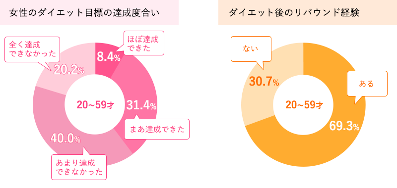
日本パスタ協会調べ（n=440）
それによると、ダイエット目標に対して、「ほぼ達成できた」、「まあ、達成できた」と回答した人の割合は、全体で39.8%。裏を返せば、6割の女性たちは自分の掲げた目標に至っていないということです。また、リバウンドについては、全体の約7割が(経験が)「ある」との回答でした。少し掘り下げてみると、年代が上がるほどリバウンドする割合が高くなる傾向が表れました。
炭水化物とダイエットの関係
言うまでもなく、パスタは炭水化物に分類される食材。ちなみに今回、「好きな炭水化物」を訊ねたところ、パン（71.1%）に続き、パスタ（68.0%）は堂々の2位でした。
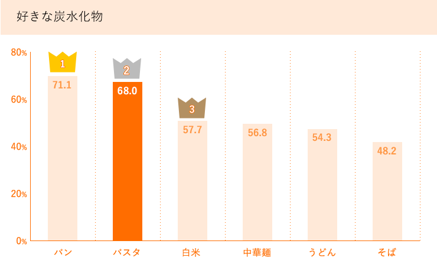
日本パスタ協会調べ（n=440）
炭水化物は、たんぱく質、脂質と並んで三大栄養素に数えられます。“三大”に選ばれるには、それなりに理由があります。
基本的に“炭水化物=糖質”と考えても差し支えありません。糖質は、簡単に言うと、脳と身体を動かす“燃料”で、脳を働かせる唯一のエネルギー源なのです。皆さんも経験があると思いますが、ご飯を抜くと頭がボォーとしたり、疲れた時には甘いものを食べろと言われたりするのも、そのためです。
ヒトは糖質の大部分を炭水化物の形で取り入れています。そのことで、私たちは炭水化物を“ダイエットの敵”と誤解してしまいます。今回のアンケートで、“ダイエット期間中の食事内容と、その時の気分”を自由回答で募ったところ、“炭水化物を控えて”という記述が多く見られました。そして、「物足りない」、「満足感がない」、「苦行だった」等の言葉が続いていました。
ダイエット中に糖質制限をした女性と、しなかった女性の“空腹感”を比較してみました。それが以下のグラフです。
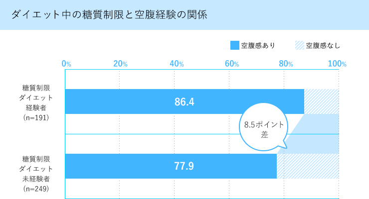
※糖質制限ダイエット未経験者の中には、糖質に限定せず、摂取する食事量自体を減らしている人も含まれる。
日本パスタ協会調べ（n=440）
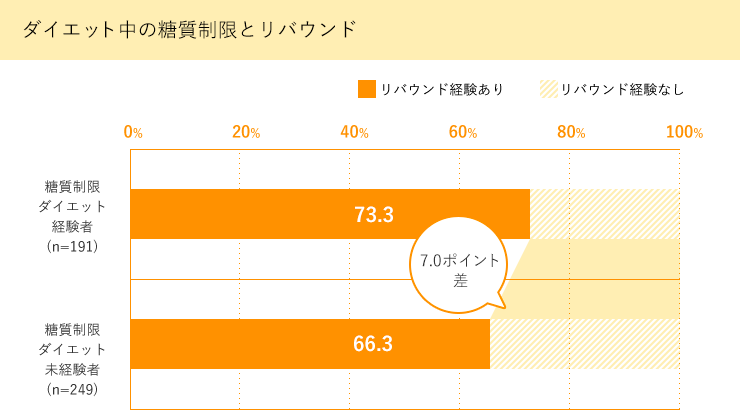
※糖質制限ダイエット未経験者の中には、糖質に限定せず、摂取する食事量自体を減らしている人も含まれる。
日本パスタ協会調べ（n=440）
これで見ると、“空腹感”を覚えた割合で、糖質摂取を制限したダイエット経験者の方が、制限しなかった人たちよりも、8.5ポイント高いスコアになっています。また、リバウンドとの関係では、「未経験者」よりも7.0ポイント、リバウンド率が高い結果でした。
糖質の制限度合いにも因りますが、過度な制限を前提としたダイエットは空腹感を抱え、大きなストレスになっているようです。そして結局はリバウンドにつながってしまうと言えそうです。
ここで考えたいのは、試合前の減量に挑むボクサーと違い、ダイエットは決して一過性のものではないということです。ダイエットとは、一生の習慣として継続できなければ意味がないのではないでしょうか。空腹を抱え、脳が働かない日々を続けるダイエットは、精神的にも肉体的にも何のメリットもないということです。
肥満防止のためのインシュリン・コントロール
肥満のメカニズムを簡単におさらいしてみます。
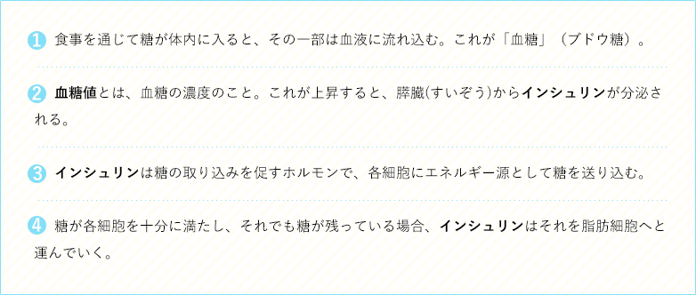
これが蓄積され続けると肥満になります。
このメカニズムからもわかるように、肥満防止で気を付けるべきは、インシュリンの分泌を如何にコントロールするかという点。そしてインシュリンの分泌に大きく関ってくるのが、“血糖値の上昇速度”です。急激に血糖値が上がると、インシュリンが大量に分泌され、その結果、糖がエネルギーとして消費されないうちに脂肪細胞へと送り込まれ、蓄積されていくということです。
逆に言えば、ゆっくり血糖値を上げればインシュリンの分泌は抑えられ、余計な糖を溜め込まずに済むという訳です。
ですから、ダイエットではインシュリンのコントロールが重要になってきます。そのためには、血糖値をゆっくりと上昇させる炭水化物を摂取することが求められます。それがパスタなのです。
血糖値が上昇するスピードを測定したものをGI(グリセミック・インデックス) 値と言います。以下が各主食類のGI値です。ご覧いただいてわかるように、他の主食類と比較して、パスタが低い値であることがわかりますね。ちなみに、このスコアは朝食シリアル、ライ麦粉パン、リンゴなど同等です。
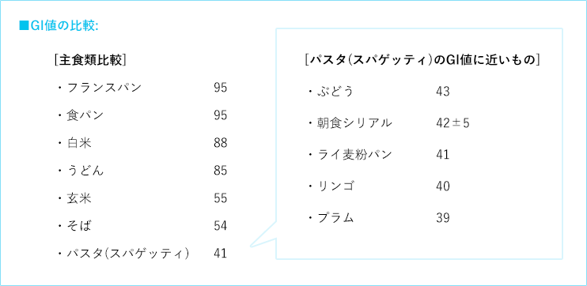
パスタの場合、同じ炭水化物である白米、パン、うどんと比較しても、血糖になるまでの消化がゆっくりと進むので、血糖値が急激に上がることがなく、そのため、過度なインシュリンの分泌がなされることがありません。その点からも、パスタはダイエット向きの食材といえるのです。
効率的なエネルギー代謝で健康ダイエット
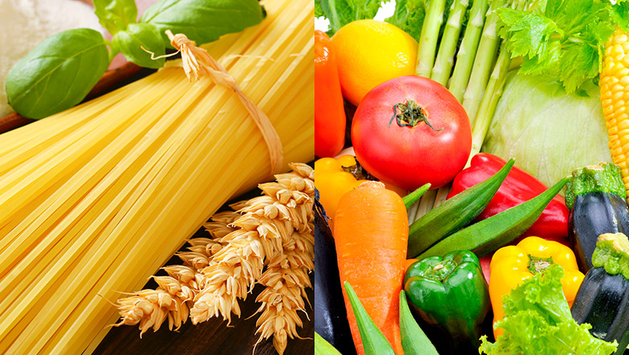
皆さんの最も身近なパスタと言えば、“乾燥パスタ”。その原料は、「デュラムセモリナ」という小麦粉です。余談ですが、デュラム」は小麦の品種名、「セモリナ」は “粉の挽き方”で“粗びき”を表しています。デュラムセモリナは、パンやうどんに使用されている小麦とはまったく性質が異なり、粒が固く、粒子が大きい特徴です。
さて、この小麦は、ダイエットや運動に極めて密接に関係している糖質、たんぱく質、ビタミンB群の3つの栄養素を豊富に含んでいます。
まず、筋肉の主な材料がたんぱく質であることは、ご存知の方も多いと思います。エクササイズに勤しむ人やアスリートも、筋肉を成長させるために、プロテイン(たんぱく質)を摂取している光景はもはや当たり前と言っていいでしょう。しかし、たんぱく質を体内に吸収するには、アミノ酸に分解する必要があります。その際に欠かせないのがビタミンB群です。糖質は直接筋肉を作り上げる栄養素ではありませんが、筋肉を動かすエネルギーとなります。動かすことで筋肉は成長し、身体の効率的な代謝促進へとつながっていきます。この他、パスタは日本人に不足しがちな鉄分・カルシウム(お米の3倍)、さらに食物繊維も多く含んでいる健康食材と言えます。
また、うどんや蕎麦と違い、パスタは“噛んで食べる” 麺。そのため満腹中枢が刺激されて食べすぎを防ぐことができます。これで苦行のような“空腹感”を抱えたダイエットから解放されますね。
パスタは消化吸収が緩やかなだけでなく、効率的なエネルギー代謝を促す栄養成分を含む食材だと言えます。
パスタでおいしくダイエット
以上のように、栄養価の点からも、パスタが優れたダイエット食材であることがご理解していただけましたか。
最後に、健康的にダイエットを目指す皆さんに向け、パスタ協会が厳選したおいしいパスタ・メニューをご紹介します。
つらく苦しいダイエットから、明るくおいしいダイエットへ向け、パスタを上手に活用してください。
 パスタ協会推薦。ヘルシーパスタ・レシピ
パスタ協会推薦。ヘルシーパスタ・レシピ
(※450Kカロリー以下)
-
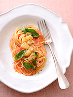
-
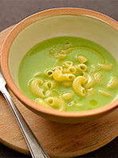
-
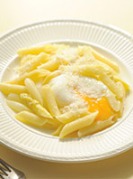
-
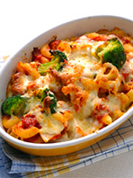
-
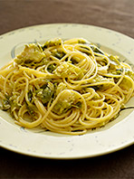
-
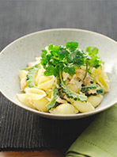
-
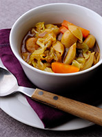
-
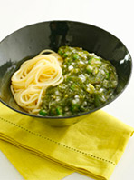
-
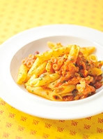
-
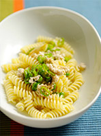
これ以外にも、日本パスタ協会公式サイトでは、2000種以上のパスタ・レシピを大公開。
調査概要
- 調査タイトル：
- ライフスタイルに関するアンケート
- 調査期間：
- 2016年8月5日〜8月12日
- 調査方法：
- インターネットリサーチ
- サンプル数：
- 440名
- 調査対象：
- 直近3年以内に、美容や健康を目的に何らかのダイエットを試みたことのある20代〜40代女性